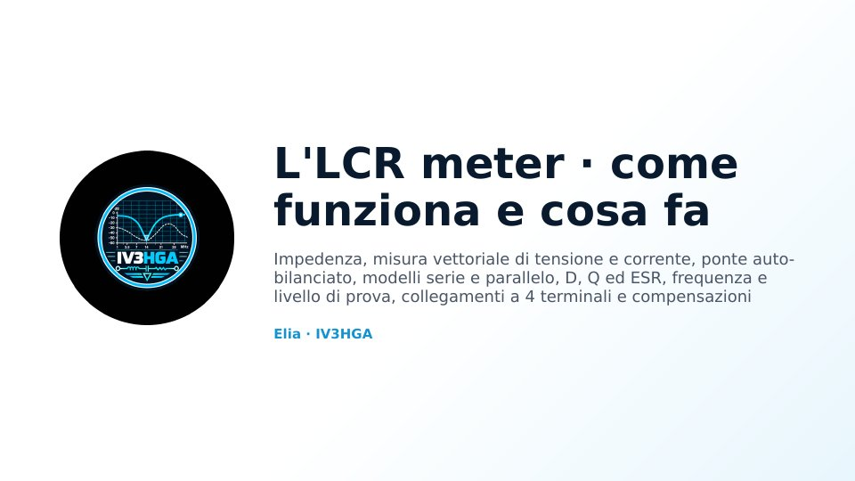

Capitolo 3 · Modulo 1
L'LCR meter: come funziona e cosa fa
- Reattanze, fasori e misura vettoriale V/I con demodulazione sincrona
- Un esempio passo per passo; modello serie o parallelo, D, Q ed ESR
- Autorisonanza, livello, DC bias e come scegliere frequenza e modello
- Collegamenti a 4 terminali, compensazione, esempi con i numeri ed errori comuni